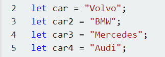
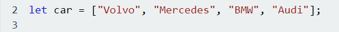
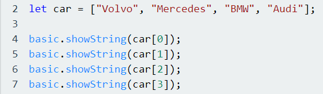

Innen programmering så er arrays en spesiell variabel som kan holde på mer enn en verdi om gangen. Hvis man vil ha en liste av verdier (som da for eksempel kan være en liste med ulike biler), så kan man enkelt gjøre dette i en variabel. Vanligvis hvis man skulle laget en liste med enkle variabler, så ville dette sett slik ut:
Istedenfor å skrive det på denne måten, så setter vi heller alle verdiene i en variabel og lager dermed en liste, eller som vi ville sagt i programmeringspråk; en array. Dette vil da se slik ut:
I denne variabelen så setter vi alle verdiene som vi ønsker å holde på og separerer dem med komma. Hver verdi, som da her er hvert bilmerke, er elementer. For eksempel så er Mercedes ett element i listen car. Elementer som finnes i arrayer i JavaScript kaller vi får indexer. I hver array så starter man med index 0, i denne sammenhengen her, så er Volvo index 0 i arrayen car, mens Audi er index 3 i arrayen. Hvis vi skal spesifisere hvilket element i denne arrayen vi ønsker å hente ut , for eksempel hvis vi ønsker å hente ut "Audi", så skriver vi cars[3]. Indexer må skrives inn i kantete parenteser [].
Lister/Arrayer bruker vi ofte i forstand med løkker, eller når vi ønsker å holde på mange ulike verdier av samme kategori. Vi tar for oss eksempelet med biler, men dette kan også gjøres med andre ting som klær eller bøker. Vi ser mer på løkker i neste oppgave. Vi kan lage lister som holder på tall også, men en viktig forskjell når vi velger å bruke strings (ord og navn) istedenfor tall, er at alle strings må skrives i anførselstegn («»). Når vi lager en liste med tall, så trenger vi ikke anførselstegn.
Hvis vi ønsker å se innholdet av variabelen car, så må skrive en kode som skal skrive ut alle verdiene. Det er enklest å gjøre ved hjelp av løkker, men siden vi forklarer løkker nærmere i neste oppgave, så gjør vi det på en mer «manuell» måte:
Vi bruker lister/arrayer for å lagre mange elementer eller objekter av samme type data i en variabel. Istedenfor å lage individuelle variabler, som for eksempel da nummer1, nummer2, osv. så er det da mye mer gunstig å lage en variabel av typen integer (som da er datatypen for tall) og da bruke indekser som representerer hvert objekt i arrayen.
En rød tråd innen programmering, er å gjøre selve utviklingen av programmet så enkelt som mulig og med minst mulig feil, det er derfor da enklere å lage lister som holder på flere elementer av samme datatype istedenfor å bruke lang tid får å lage en enkel variabel for hvert element som da har felles datatype.